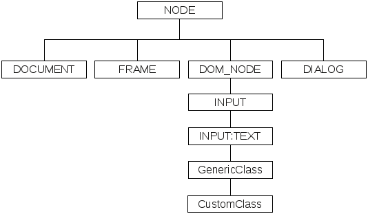

| Version 6.0.3 |
QF-Test bietet 'SUT Skript' Knoten Zugriff auf einen Teil des DOM API einer
Webanwendung. Dieses API entspricht nicht ganz dem auf JavaScript Ebene, auf welcher
mittels der in diesem Kapitel beschriebenen Methoden toJS und
evalJS mit der Webanwendung interagiert werden kann. Mit dem DOM API ist es
möglich, das DOM zu traversieren und Attribute von DOM Knoten auszulesen und zu setzen,
aber nicht die Struktur des DOM zu verändern. Dieses API ist damit hilfreich für die
Implementierung von Name- oder FeatureResolvern (vgl. Abschnitt 50.1).
Bei Swing, FX und SWT arbeitet QF-Test mit den konkreten Java GUI Klassen, während bei Webanwendungen folgende pseudo Klassenhierarchie verwendet wird:
|
|  | ||
|
| Abbildung 50.1: Pseudo Klassenhierarchie für Elemente von Webanwendungen | ||
Wie zu sehen, ist "NODE" die Wurzel der pseudo Klassenhierarchie. Diese Klasse passt auf jedes Element des DOM. Von "NODE" abgeleitet sind "DOCUMENT", "FRAME", "DOM_NODE" und "DIALOG", die Knotentypen, die das pseudo DOM API implementieren, welches in Abschnitt 50.11 beschrieben ist. "DOM_NODE" wird an Hand des Tag-Namens des Knotens weiter spezialisiert, z.B: "H1", "A" oder "INPUT", wobei es für manche Tags zusätzliche Unterklassen wie "INPUT:TEXT" gibt.
HinweisDas DOM kann für verschiedene Browser unterschiedlich ausfallen. Daher sollten Sie versuchen, sich in Ihren Skripten und Resolvern nicht auf Kindindizes zu verlassen, falls Sie beabsichtigen mit mehreren Browsern zu testen.
Das DOM API von QF-Test besteht aus den folgenden fünf Klassen:
Node
DocumentNode
FrameNode
DomNode
DialogNode
| Letzte Änderung: 6.9.2022 Copyright © 1999-2022 Quality First Software GmbH |